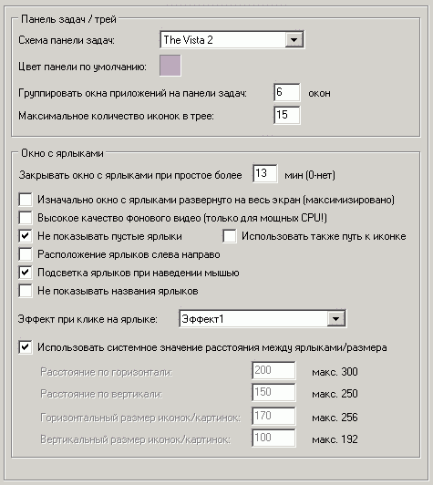

Наиболее важные опции на этой вкладке:
Группировать окна приложений на панели задач
Чтобы не занимать много места на панели задач окна таких приложений как IE, проводник и пр. можно группировать. Укажите минимальное число окон группы или 0 для отмены группировки.
Не показывать пустые ярлыки/использовать путь к иконке
Если включена опция "Не показывать пустые ярлыки", то не будут отображаться ярлыки, путь к исполняемому файлу которых не найден.
Если же дополнительно включить "Использовать путь к иконке", то будет также проверяться путь к иконке ярлыка (если установлен).